Three hill regions in one trip. This itinerary is built from our nights-per-place outline; the day plans, timings and changes are ours. Darjeeling to Thimphu is too far for one day (about 320 km over mountain roads and a border), so we add a night in Phuentsholing at the border and take one night from Cherrapunji. Paro to Guwahati is best done on Drukair's direct flight.
See it for yourself
Photos from the journey
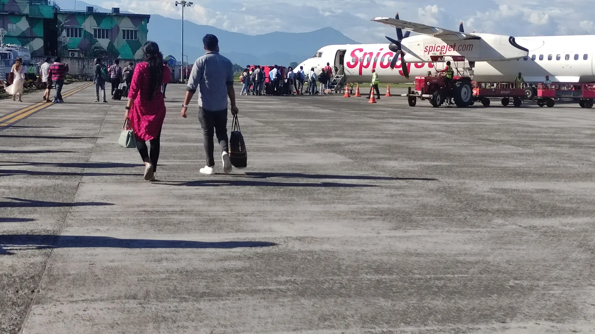
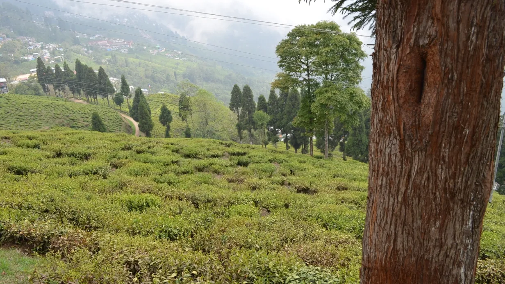
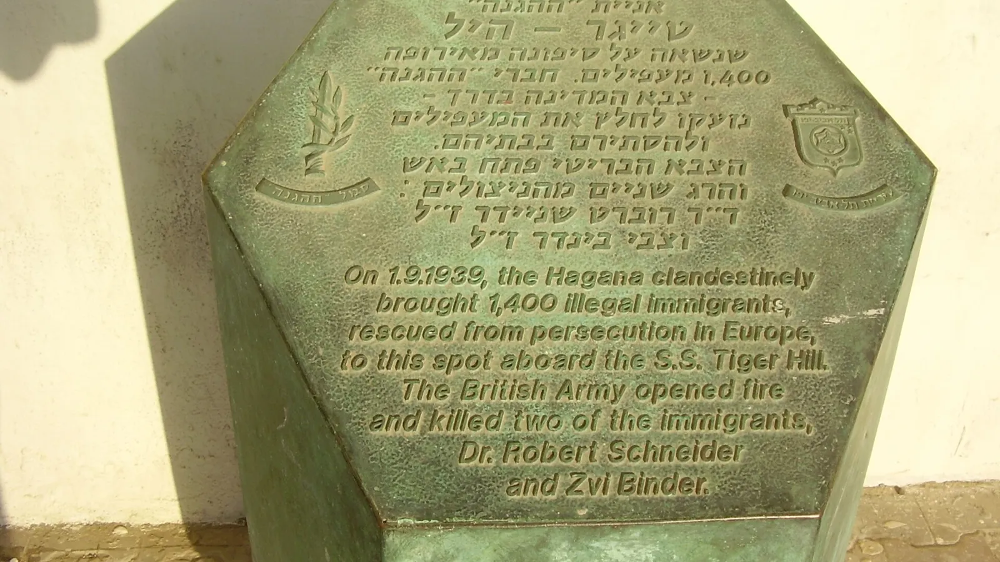
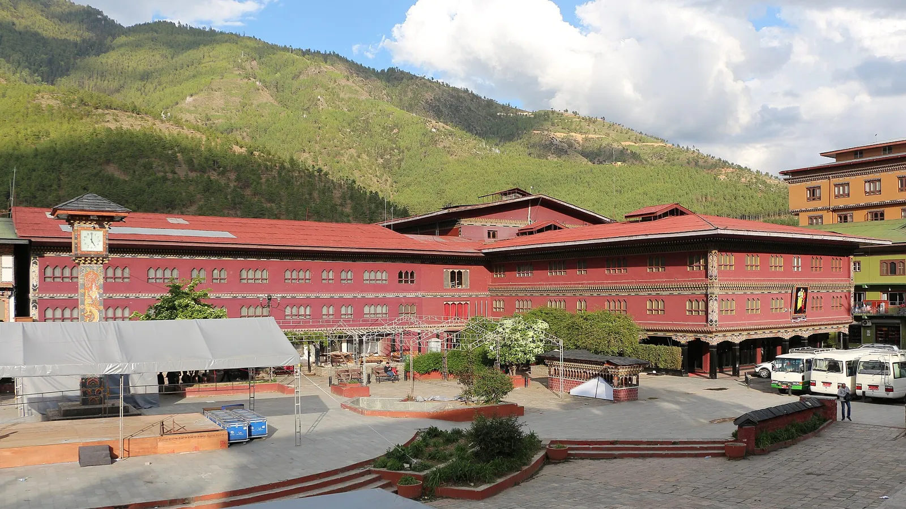
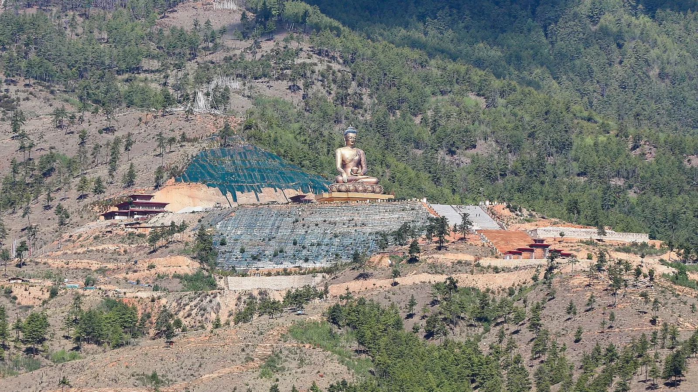
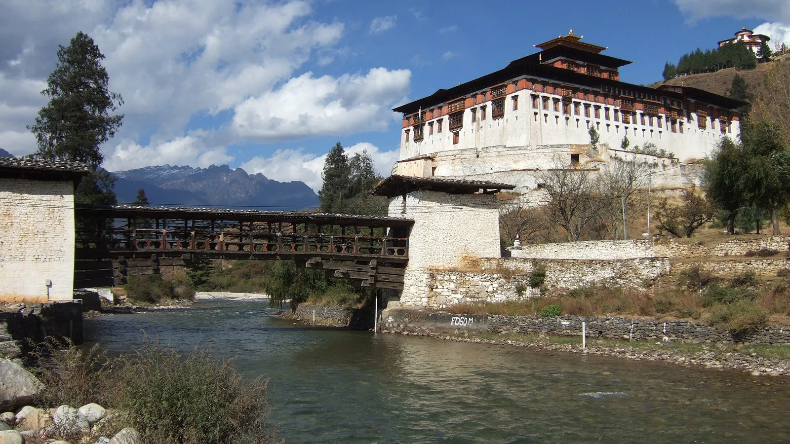
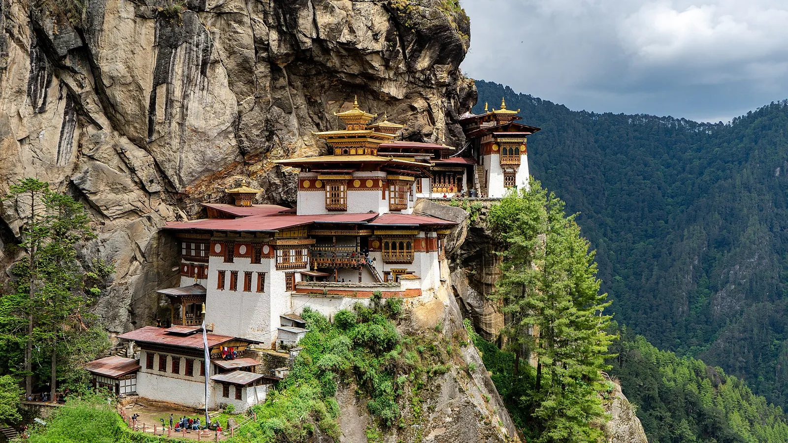
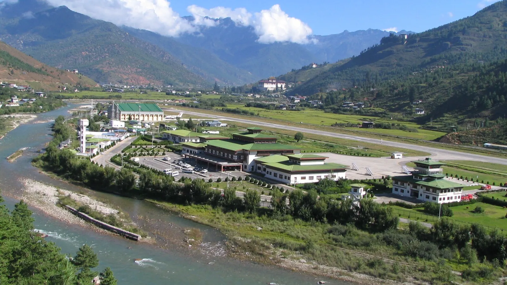
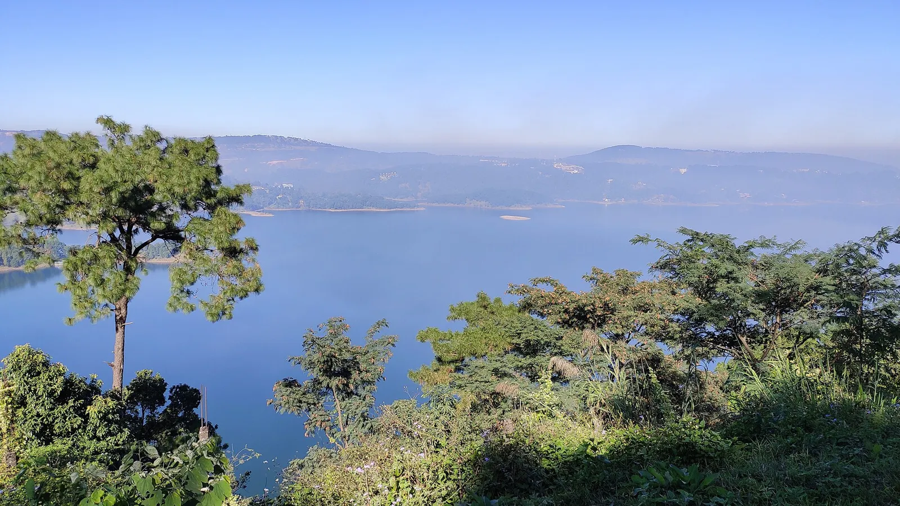
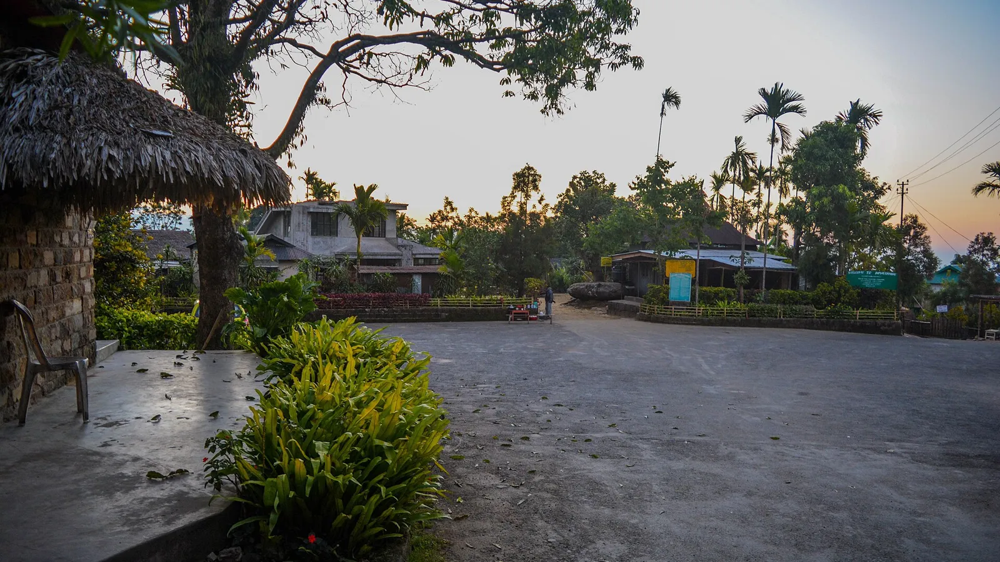
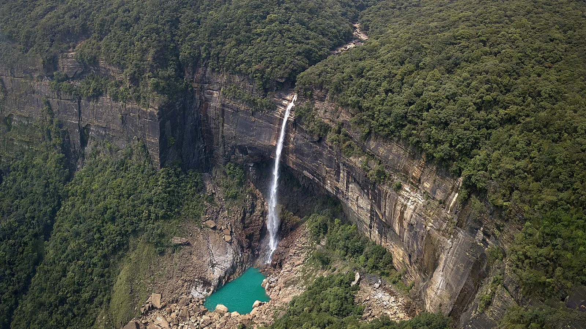
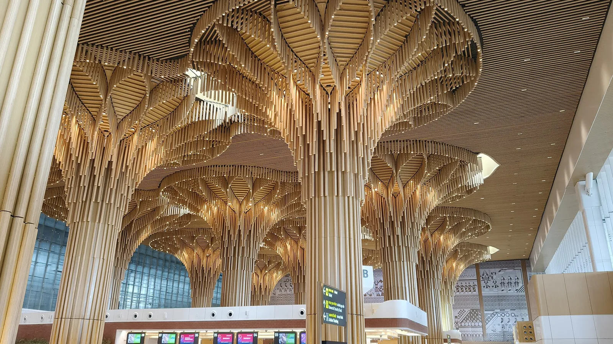
Where you go
The journey on one map
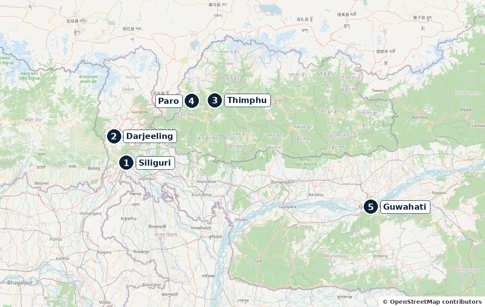
SiliguriDarjeelingPhuentsholingThimphuParoGuwahatiShillongCherrapunji
Day by day, in short
Daily travel brief
Distances are by road for the whole day. The full plan with timings comes with your detailed itinerary.
-
1
Arrive in Siliguri
- Siliguri is a gateway only.
-
2
Up to Darjeeling
- Tiger Hill sunrise tomorrow leaves at about 04:00.
-
3
Tiger Hill sunrise and the road to Phuentsholing
- Drive to Phuentsholing: bhutan entry permits are issued at the Phuentsholing immigration office on working days.
- Indian travellers need a passport or voter ID for Bhutan.
-
4
Into Bhutan: Phuentsholing to Thimphu
- Bhutan charges a Sustainable Development Fee per night: about INR 1,200 for Indian visitors, USD 100 for most others.
-
5
Thimphu and Dochula
- Tashichho Dzong: long sleeves and long trousers or skirts in all dzongs.
- Bhutanese food is chilli-heavy; ask for 'less chilli'.
-
6
To Paro and Paro Dzong
- Tiger's Nest tomorrow: sturdy shoes and water.
-
7
Hike to Tiger's Nest
- Taktsang trail: steep and at about 3,100 m.
- A hot-stone bath tonight is the Bhutanese cure for tired legs.
-
8
Fly from Paro to Guwahati
- Flight to Guwahati: drukair flies this route on set days only; dates are planned around it.
- If the flight does not suit your dates, we drive back via Phuentsholing, which adds a day.
-
9
To Shillong via Umiam Lake
- Shillong has a lively live-music café scene.
-
10
Mawlynnong and Dawki
- Boat on the Umngot at Dawki: the water is clearest from November to April.
- Dawki is on the Bangladesh border; stay on the Indian side of the river.
-
11
Cherrapunji's falls and caves
- Double-decker root bridge at Nongriat: only for fit walkers; allow 5 to 6 hours.
- Start the Nongriat walk by 08:00.
-
12
Fly home from Guwahati
- Transfer to the airport: leave 4 hours before an international flight and 3 before a domestic one.
- Pack liquids and souvenirs in checked baggage.
Local know-how
Travel hacks from our desk
UPI, cards and cash
UPI works almost everywhere, even at small stalls. Keep some cash in INR 100 and 200 notes for temples, parking, tips and places where the network is weak.
Temple and shrine etiquette
Cover shoulders and knees. Remove shoes where asked, and carry socks for hot stone floors. Leather belts and bags are not allowed inside some Jain and Hindu temples. Ask before photographing people and inside shrines.
Water and street food
Drink sealed bottled or filtered water only. Choose busy stalls where food is cooked in front of you, and skip cut fruit and ice from roadside stalls.
Driving times
Indian roads are slower than the kilometres suggest: plan on 40 to 50 km an hour on highways and much less in hills and towns. Your driver's breaks and meal stops are built into the timings.
Plugs and tipping
Plugs are Indian three-pin and two-pin, 230 volts. Tipping drivers and guides about INR 300 to 500 a day is appreciated.
When to go
Best time to visit for this journey
October and November: clear Himalayan views and full waterfalls.
October to December and March to May. Avoid June to September: heavy monsoon and landslides.
The package
What's included
Included
- Hotels as listed with breakfast
- Private air-conditioned car with driver for all transfers and sightseeing
- 24/7 support from Blue Diamond Voyage
- Bhutan permits and guide
- Paro to Guwahati flight (economy)
Not included
- Flights and trains not listed as included
- Entry fees, guides, boats and activities
- Lunches and dinners unless stated
- Travel insurance
- Bhutan Sustainable Development Fee
The detailed itinerary
Some journeys are planned. Ours are crafted.
The full 12-day plan is ready: hour-by-hour timings, drive times, temple dress codes, food for your diet and a route map for every day. Tell us your dates and your city, and we'll send it to you on WhatsApp, shaped around you.
- Hour-by-hour timings
- A route map for every day
- Hotel and room details
- Visa and entry steps
- Vegetarian and Jain dining
24/7 travel desk+91 97148 59797+91 98242 21400
Photo and map credits
- Bagdogra Airport: Mahafujalam6131, CC BY-SA 4.0, via Wikimedia Commons
- Happy Valley Tea Estate: Matt Stabile, CC BY 2.0, via Wikimedia Commons
- Tiger Hill: Avi1111 dr. avishai teicher, CC BY 3.0, via Wikimedia Commons
- Thimphu: Bernard Gagnon, CC BY-SA 4.0, via Wikimedia Commons
- Buddha Dordenma: Bernard Gagnon, CC BY-SA 4.0, via Wikimedia Commons
- Rinpung Dzong: Christopher Fynn, CC BY-SA 3.0, via Wikimedia Commons
- Taktsang Monastery: Original: Nina R from Africa Derivative work: UnpetitproleX, CC BY 2.0, via Wikimedia Commons
- Paro International Airport: Douglas J. McLaughlin, CC BY 2.5, via Wikimedia Commons
- Umiam Lake: ANKAN, CC BY-SA 4.0, via Wikimedia Commons
- Mawlynnong: Madhumita Das, CC BY-SA 4.0, via Wikimedia Commons
- Nohkalikai Falls: Vikramjit Kakati, CC BY-SA 4.0, via Wikimedia Commons
- Lokpriya Gopinath Bordoloi International Airport: BhuyanBhaskar, CC BY 4.0, via Wikimedia Commons
- Maps: © OpenStreetMap contributors; road routes by OSRM.